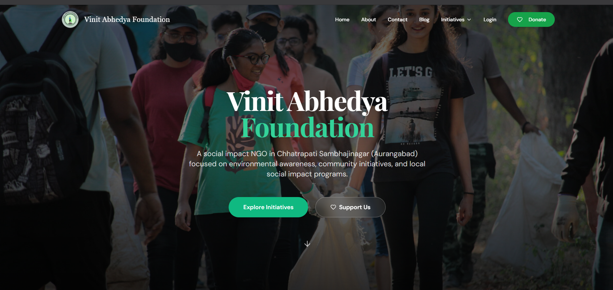

Direct Founder Access
No account manager or project hierarchy. You communicate directly with the founder throughout the engagement.
Veritous is an independent software studio founded and built by Mayuresh Kahar. I design and engineer websites, SaaS products, AI applications, and custom software from idea to launch.
What I Build
You work directly with the person designing, engineering, and shipping the product. No account manager between you and the developer.
High-performance websites and web applications designed around your users, business goals, and technical requirements.
React · Next.js · HTML · CSS →Purpose-built software for workflows that off-the-shelf tools cannot handle cleanly.
Node · C# · APIs · Databases →Practical AI features and applications that connect models, data, automation, and real product workflows.
LLMs · RAG · APIs · Automation →MVPs and SaaS systems with authentication, dashboards, APIs, data models, and the foundations required to grow.
Auth · REST · Payments · Analytics →Deployment architecture, environments, APIs, databases, and cloud foundations built with maintainability in mind.
AWS · Docker · CI/CD · Cloud →Clean interfaces and design systems that make the underlying software easier to understand and use.
Figma · Systems · Motion →Veritous is intentionally lean. The person you speak with is the person who understands the architecture, writes the code, and takes responsibility for the product.
No account manager or project hierarchy. You communicate directly with the founder throughout the engagement.
Technical and product decisions do not have to pass through multiple layers before work can move forward.
Product goals, design decisions, architecture, and implementation stay connected instead of being passed between people.
I focus on the smallest useful version first, then improve it through measurable iterations.
I stay close to the codebase and the technical decisions instead of outsourcing the core engineering work.
The same person who learns the system can continue maintaining, improving, and extending it after launch.
Founder & Software Engineer
Meet the Founder
Founder • MCA Graduate • Software Engineer
I believe good software comes from understanding the problem deeply, communicating clearly, and caring about the details all the way to production.
I'm Mayuresh Kahar, the founder and developer behind Veritous. I work across software engineering, cloud computing, artificial intelligence, and product development, with a focus on turning ideas into practical digital products.
Veritous is intentionally founder-led. When you work with me, you are not buying access to a large agency team. You are working directly with the person responsible for understanding the problem, designing the solution, writing the software, and shipping it.
How I Work
The workflow stays deliberately simple: understand the problem, define the solution, build it, and keep improving it.
We start with the problem, users, goals, constraints, and what success actually needs to look like.
I turn the requirements into a practical product scope, architecture, technical plan, and delivery milestones.
I design, code, test, integrate, and iterate in visible milestones so you always know what is being built.
After deployment, I can continue with fixes, maintenance, monitoring, improvements, and new product capabilities.
Selected Work
A selection of products and platforms built across software, AI, education, and social impact.

Full Stack Web Platform
A complete volunteer management platform built for Vinit Abheydya Foundation, featuring role-based dashboards, attendance management, certificate generation, analytics, and volunteer lifecycle management.

AI Web Application
An AI-powered chatbot integrating Google Gemini with authentication, conversation history, credit-based usage, and a scalable backend architecture.

Education Platform
A student management platform with role-based authentication, reusable modules, REST APIs, and a MongoDB-backed architecture for educational workflows.
Areas of Expertise
I work across product engineering, AI, cloud, education, social-impact platforms, and startup software.
Technology Stack
The stack changes with the product. I choose technologies based on requirements, maintainability, performance, and delivery constraints.
Working With Veritous
There is no large delivery structure to navigate. You explain the problem, I shape the technical direction, and we move through clear milestones together.
Share the idea, workflow, challenge, or product you want to build. It can be a rough concept or a detailed specification.
I break the problem into scope, architecture, technologies, milestones, and a practical delivery approach.
Development happens in visible milestones with direct feedback, working software, and clear communication.
After deployment, I can continue with maintenance, monitoring, improvements, fixes, and new features.
If you have a product idea, an existing codebase that needs work, or a business workflow that should become software, start with a conversation directly with me.
Good to Know
Start a Conversation
Tell me what you're trying to build, what is currently getting in the way, and where you want to go. I'll help turn the problem into a practical technical plan.